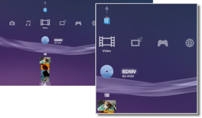

Video > Video kategorisi
Video kategorisi
Aşağıdaki simgeler  (Video) altında görüntülenir. Görüntülenen simgeler kullanım koşullarına göre değişir.
(Video) altında görüntülenir. Görüntülenen simgeler kullanım koşullarına göre değişir.

 |
BD Verileri Yardımcı Programı | Blu-ray Disc™ (BD) tarafından kullanılan yönetim verileri kaydedilir. |
|---|---|---|
 |
Ortam Sunucuları Ara | Aynı ağa bağlı DLNA Ortam Sunucuları için bir arama başlatın. |
 |
Ortam Sunucusu | DLNA Ortam Sunucularına bağlanın ve burada depolanan video dosyalarını oynatın. Görüntülenen simge sunucu türüne göre değişir. |
 |
Video Düzenleyicisi ve Yükleyicisi | PS3™ sisteminin sistem depolama alanında kayıtlı video içeriğini düzenleyin. |
 |
BD-ROM / BD-R / BD-RE | Bir Blu-ray Disc (BD) oynatın. |
 |
DVD-ROM / DVD-R / DVD+R / DVD-RW / DVD+RW | Bir DVD veya bir AVCHD Disk oynatın. |
 |
Veri Diski | CD-R veya DVD-R gibi uyumlu, kaydedilebilir disk ortamında video dosyaları oynatın. |
 |
Memory Stick™ | Memory Stick™ ortamında kayıtlı video dosyalarını kaydedin.* |
 |
SD Kart | SD Kart içine kaydedilen video dosyalarını oynatın.* |
 |
CompactFlash® | CompactFlash® içine kaydedilen video dosyalarını oynatın.* |
 |
PSP™ (PlayStation®Portable) | Bir PSP™ sisteminin Memory Stick™ ortamına kaydedilen video dosyalarını oynatın. |
 |
PSP™ (PlayStation®Portable) | PSP™go sisteminin sistem depolama alanına kaydedilen video dosyalarını oynatın. |
 |
Dijital Kamera | PS3™ sistemiyle uyumlu bir dijital fotoğraf makinesine kaydedilen video dosyalarını oynatın. |
 |
WALKMAN® / ATRAC Audio Device(WALKMAN®) | WALKMAN®/ATRAC Audio Device (WALKMAN®) içine kaydedilen video dosyalarını oynatın. |
 |
ATRAC Audio Device | Bir ATRAC Audio Device içine kaydedilen video dosyalarını oynatın. |
 |
USB Cihazı | Bir USB toplu depolama aygıtına kaydedilen video dosyalarını oynatın. |
 |
Dijital Kamerada Çekilmiş Filmler | Depolama ortamının DCIM klasörüne kaydedilen video dosyalarını oynatın. |
|
(klasör) | Bu simge PC kullanılarak depolama ortamında oluşturulan klasörler için görüntülenir. |
 |
(sistem depolama alanına kaydedilen dosyalar) | PS3™ sisteminin sistem depolama alanına kaydedilen video dosyalarını oynatın. Küçük resim görüntüleri görüntülenir. |
 |
(sistem depolama alanına indirilen veriler) | Bu simge sistem depolama alanına indirilen video dosyaları için görüntülenir. Başlatıldığında, veri yüklenir ve video dosyası oynatılabilir. |
| * |
Depolama ortamını PS3™ sisteminin bazı modelleriyle kullanmak için uygun bir USB adaptörü (birlikte verilmez) gerekir. Bir USB adaptörle kullanıldığında, depolama ortamı |
|---|
 (USB Cihazı) olarak görüntülenir.
(USB Cihazı) olarak görüntülenir.İpuçları
- PS3™ sisteminde PlayStation®Store'dan video içeriğinin satılması/kiralanması durdurulmuştur.
- DLNA hakkında ayrıntılar için, bu kılavuzdaki
 (Ayarlar) >
(Ayarlar) >  (Ağ Ayarları) > [Ortam Sunucusu Bağlantısı] konusuna bakın.
(Ağ Ayarları) > [Ortam Sunucusu Bağlantısı] konusuna bakın. - Sistemin 1080p çözünürlükte Blu-ray Disc'ten telif hakkı korumalı içerik çıkarması için, sistemi HDCP (High-bandwidth Digital Content Protection) standardıyla uyumlu bir aygıta bağlamak için bir HDMI kablosu kullanmanız gerekir.
- Küçük resim görüntüleri bazı telif hakkı korumalı video dosyası türlerinde görüntülenmeyebilir.
- Ebeveyn denetimi kısıtlamalı içerik içeren bir BD oynatırken, oynatma PS3™ sistemindeki ebeveyn denetimi seviyesi ayarına göre sınırlanacaktır. BD ebeveyn denetimi seviyesi (Ayarlar) >
 (Güvenlik Ayarları) altında ayarlanabilir.
(Güvenlik Ayarları) altında ayarlanabilir. - Ebeveyn denetimi kısıtlamalı içerik içeren Bir DVD oynatırken, içeriği oynatmak için bir parola gerekebilir. Parola (Ayarlar) > (Güvenlik Ayarları) altından ayarlanabilir.
- Ebeveyn denetimi kısıtlamalı içerik
 olarak görüntülenir. Bu tür içeriği 4 basamaklı bir parola girerek etkinleştirebilirsiniz. Parola (Ayarlar) > (Güvenlik Ayarları) altından ayarlanabilir veya değiştirilebilir.
olarak görüntülenir. Bu tür içeriği 4 basamaklı bir parola girerek etkinleştirebilirsiniz. Parola (Ayarlar) > (Güvenlik Ayarları) altından ayarlanabilir veya değiştirilebilir. - Disk kilitli BD'ler
 olarak görüntülenir. Bu tür disklerde içeriği oynatmak için, disk geliştirici tarafından ayarlanan parolayı girin.
olarak görüntülenir. Bu tür disklerde içeriği oynatmak için, disk geliştirici tarafından ayarlanan parolayı girin. - Nadir durumlarda, PS3™ sisteminde oynatılırken diskler ve diğer ortamlar düzgün çalışmayabilir. Bu, temel olarak yazılımın üretim veya kodlama işlemindeki çeşitlilikler nedeniyledir.
- HDCP (High-bandwidth Digital Content Protection) standardıyla uyumlu olmayan bir aygıt bir HDMI kablosu kullanılarak sisteme bağlanırsa video ve/veya ses sistemden çıkarılamaz.
3D içeriğini izleme
3D standardını karşılayan 3D uyumlu bir televizyon ve yüksek hızlı HDMI kablo 3D içeriğini izlemek için gerekir.
İpuçları
- İçeriğe bağlı olarak, Blu-ray 3D™ içeriği oynatılırken menüler ve alt yazılar gibi bazı öğeler, PS3™ sisteminde 3D'de diğer oynatma cihazlarında görünenden farklı görüntülenebilir.
- İçeriğe bağlı olarak, bazı BD-J özellikleri 3D oynatılamayabilir veya PS3™ sisteminde düzgün çalışmayabilir.
- Blu-ray 3D™ içeriği oynatımı sırasında Dolby TrueHD ses desteklenmez. Bunun yerine Dolby Digital formatı kullanılır.
Blu-ray Disc (BD) Yerel Depolama Alanı
BD oynatma sırasında Yerel Depolama alanının yetersiz olduğunu gösteren bir hata mesajı görüntülenirse, boş alan miktarını artırmak için sistem depolama alanındaki gereksiz dosyaları silin.
Yerel Depolama alanı BD-ROM Profili 1.1 / 2.0 standardında tanımlanan bir veri depolama alanıdır. Bu veri, PS3™ sisteminin sistem depolama alanında depolanır.